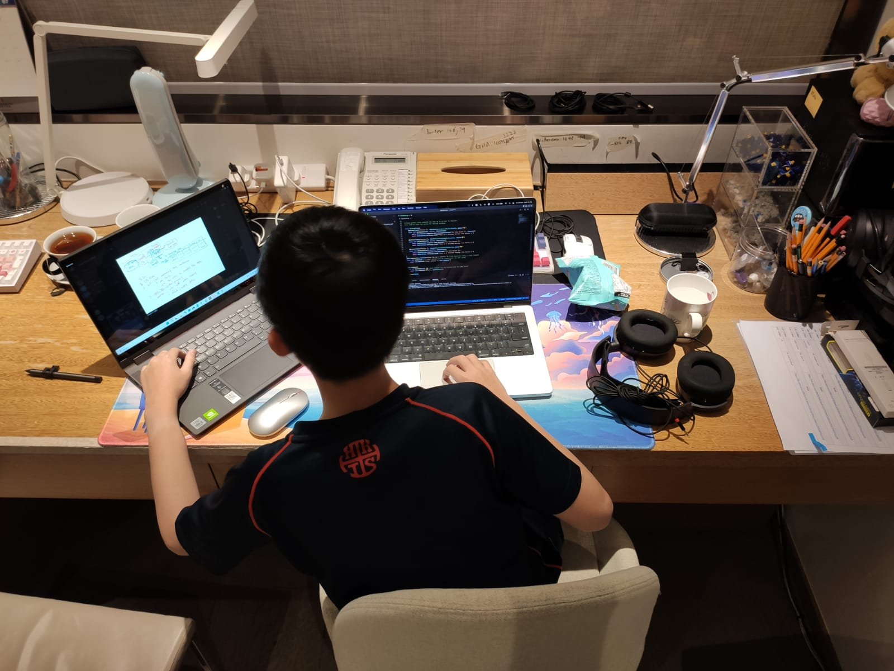
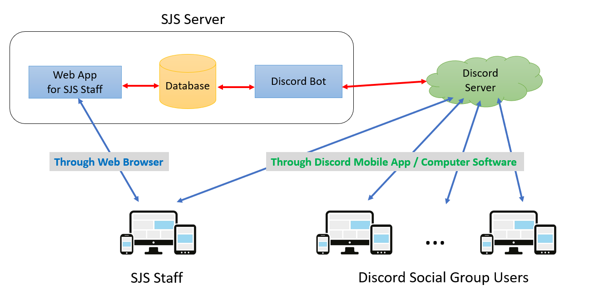

I am the Head Developer for this project, which serves the 6PM Cyber Youth Support Team at the non-profit organization St. Jame's Settlement in Hong Kong.
Severe social withdrawal, also know as Hikikomori, is defined as condition where a youth withdraws into the home and does not participate in society for a period of over six months (Wong, 2015), and these youths are also referred to as the hidden youth. Hidden youth has become a serious society issue in developed countries nowadays, e.g., Japan (Watts, 2002) and Korea (Lee at al., 2013). According to a study of Wong et al. (2015), around 2% of the Hong Kong's population would be classified as severe social withdrawal. The number of hidden youths in Hong Kong is expected to be 140,000 (Durston, 2019). The social distancing measures for the COVID-19 pandemic has made the situation worsen.
St. Jame's Settlement (SJS) is one of the non-governmental organizations (NGOs) offering government-funded social services to hidden youths. Due to the advance in Internet technologies, many hidden youths can be found online and we referred them as the cyberyouths. SJS has established a team called the 6PM Cyber Youth Support Team, which conducts youth outreach, support and counselling through the online medium. They provide online social forums for youngsters to communicate with each other, and social workers will also hold events to regularly motivate teenagers to have a mentally and socially positive life.
One of the main online social platforms maintained by 6PM is a Social Virtual Group for invited cyberyouths on the Discord platform, which contains thousands of active users. The social worker has identified and invited cyberyouths from social networking sites (SNS), online forums and case referrals to their Discord server (which is a Discord feature for forming a virtual group of members). It is a heavy task to manage a Discord server; one of the duties of the social workers at 6PM is to maintain the contacts of the server members. But direct messaging each of them for collecting and updating their contact details is tedious and time-consuming. Discord has offered developer API for developing Discord bots to act as server users to communicate with group members. Therefore, this project aims to develop an information system with Discord bot to help the administrator and social workers in SJS to manage the Discord users more easily.
This project aims to develop a Discord bot and a web application for managing the Discord server members at the 6PM Discord server.

